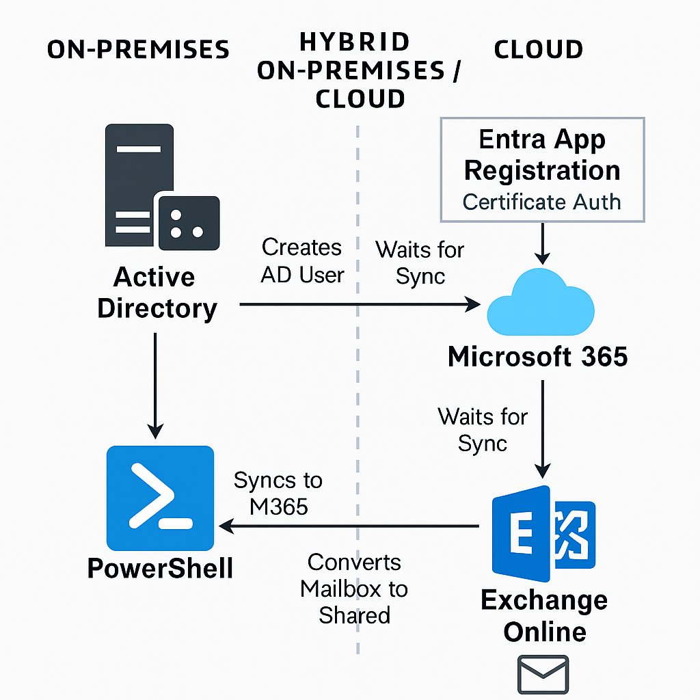

Challenge
Creating shared mailboxes in a hybrid environment was a 45-minute manual process involving AD provisioning, sync delays, and remote Exchange Online conversion. This script reduced the task to a 1-minute launch followed by passive sync monitoring.
Tools & Technologies
- PowerShell
- Active Directory (on-prem)
- Exchange Online (remote PowerShell)
- Microsoft Entra App Registration
- Certificate-based authentication
- Hybrid mailbox provisioning
Implementation
- Creates on-prem AD identity with required attributes
- Waits for sync to Microsoft 365
- Connects securely to Exchange Online via Entra app and certificate thumbprint
- Checks for mailbox presence every 2 minutes (up to 40 minutes)
- Converts mailbox to shared once detected
Script Preview
* All company-specific data has been stripped from this script. Some logic may not run properly due to missing domain, OU, and group definitions.
Import-Module ActiveDirectory
Write-Host "Welcome to the shared mailbox creation Script"
$username = Read-Host "Please enter Shared Mailbox Name"
Start-Sleep -Seconds 5
Write-Host "Please wait for AD User Creation and 365 Sync"
$upn = $username + "@.local"
$email = $username + "@"
$displayname = $username
New-ADUser -Name $displayname -SamAccountName $username -UserPrincipalName $upn `
-Path 'OU=Email Accounts,OU=Managed Accounts,OU=,DC=,DC=local' `
-AccountPassword (ConvertTo-SecureString '' -AsPlainText -Force) `
-Enabled $true -PasswordNeverExpires $true -CannotChangePassword $true
Start-Sleep -Seconds 30
Set-ADUser -Identity $username -Description "Userid used only for e-mailing"
Set-ADUser -Identity $username -Add @{proxyAddresses="smtp:$username@"}
Set-ADUser -Identity $username -Add @{proxyAddresses="SMTP:$username@"}
Add-PSSnapin *RecipientManagement
Enable-RemoteMailbox -Identity $username -RemoteRoutingAddress "$username@0.mail.onmicrosoft.com"
Add-ADGroupMember -Identity "M365 - E3 Full License" -Members $username
$AppId = "96ed1293-d19f-42a9-b274-d00850b29c21"
$Tenant = ".onmicrosoft.com"
$Thumbprint = "3598e2f7ca50ccb77f917929bc8f613730b0daa3"
Connect-ExchangeOnline -AppId $AppId -Organization $Tenant -CertificateThumbprint $Thumbprint
$maxAttempts = 20
$attempt = 1
$mailboxFound = $false
while ($attempt -le $maxAttempts -and -not $mailboxFound) {
Write-Host "Attempt $attempt of ${maxAttempts}: Checking for mailbox $email..."
$mailbox = Get-Mailbox -Identity $email -ErrorAction SilentlyContinue
if ($mailbox) {
Write-Host "Mailbox found. Proceeding with conversion to shared mailbox..."
Set-Mailbox -Identity $email -Type Shared
Write-Host "Mailbox converted to shared successfully."
$mailboxFound = $true
} else {
Write-Host "Mailbox not found. Waiting 2 minutes before retrying..."
Start-Sleep -Seconds 120
$attempt++
}
}
if (-not $mailboxFound) {
Write-Host "Mailbox was not found after 40 minutes. Please verify sync and licensing."
}
Architecture Diagram
Impact
- Reduced mailbox creation time from 45 minutes to 1 minute
- Eliminated manual cloud login and mailbox conversion steps
- Improved consistency and auditability across hybrid environments
- Enabled secure, certificate-based automation
Relevant Certification
This project aligns with SC-200: Microsoft Security Operations Analyst and SC-300: Identity and Access Administrator, demonstrating hybrid automation and secure cloud integration.